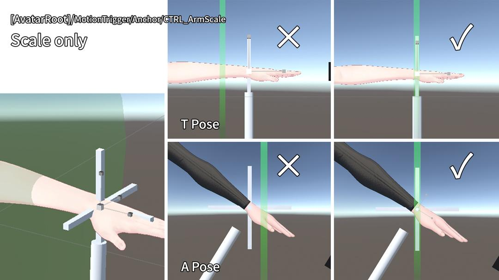
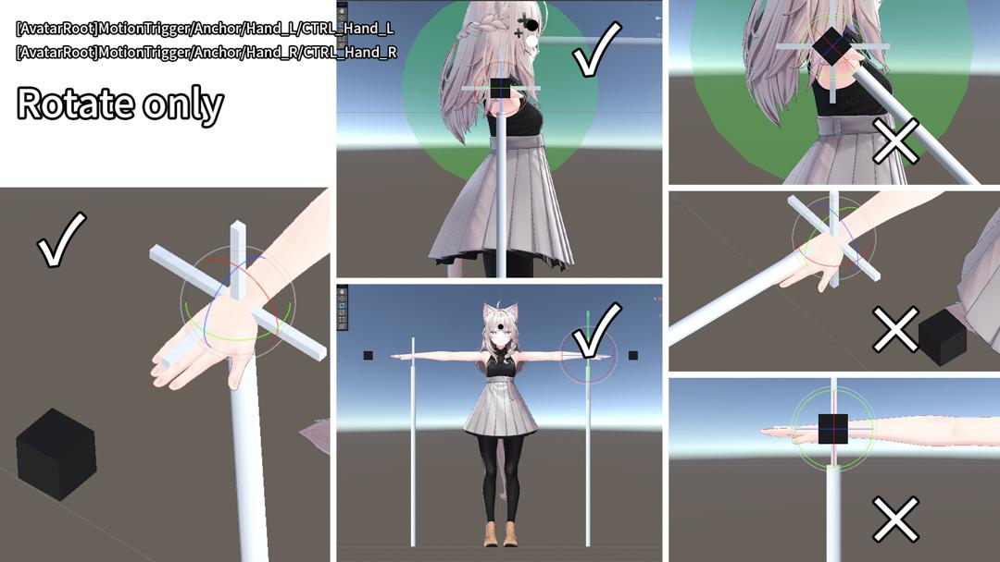
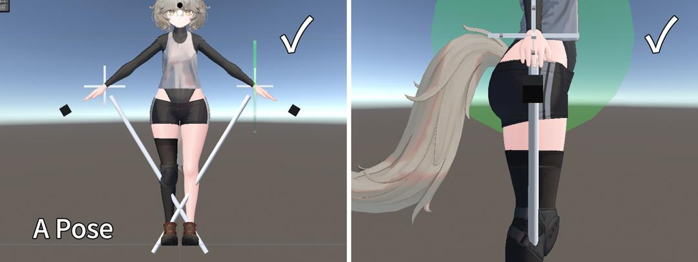
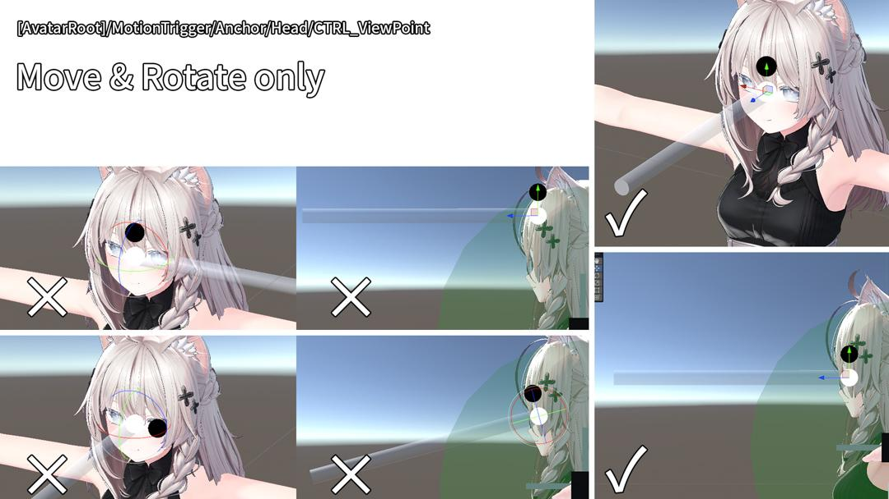
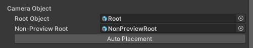
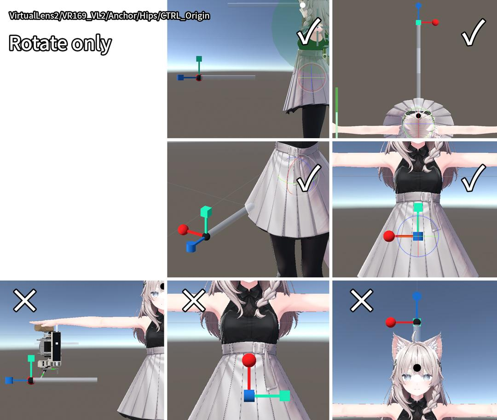
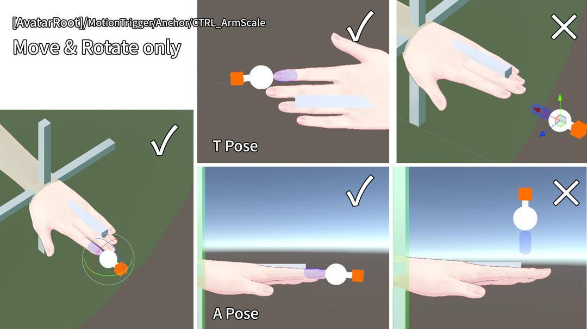

アバターへの導入
ver. 1.1.xと変更はありません。
導入説明動画
- VR169 導入方法 1.1.0https://youtu.be/pRUT7W4DFlc?si=Y-Epg9O5DM5PIj7M
導入の準備
プロジェクトの用意
必要なアセットをインポートしたUnityプロジェクトを用意します。
アバターの用意
VR169を導入したいアバターをSceneに用意します。
VR169の用意
VR169のUnitypackageをプロジェクトにインポートします。
MotionTriggerの導入
既に三号スタジオのMotionTriggerがアバターに導入されている場合は次のVR169とVirtualLens2の導入に進みます。MotionTriggerはVR169本体と別のUnitypackageで本商品に同梱されています。今後、導入を簡略化するアップデートを予定しています。
Prefabの配置
- アバター内に MotionTrigger.prefab を配置します。場所：Assets/SangouStudio/Common/Gimmick/MotionTrigger/MotionTrigger.prefab
- アバターのルート直下にドラッグ＆ドロップします。
調整の準備
アバターの体が見やすいように、上着や髪を一時的に非表示にしたり、素体のシェイプキーを調整します。
腕の長さを設定
- 腕の長さを基準に、仕組みの大きさを合わせます。
- MotionTrigger/Anchor/CTRL_ArmScale のスケールを調整します。
- Frontビュー（平行投影） で調整します。スケールをXYZ等倍で変更し、左手首の白い十字のだいたい中央 に緑色の透過オブジェクトをおおよそ重ねます。

✓：OK ×：NG例
手首の角度を設定
- アバターによって異なる手首の角度に仕組みを合わせます。MotionTrigger/Anchor/Hand_R/CTRL_Hand_R の角度を調整します。
- VR169では現在、左手側の設定は必要ありません。
- 黒い立方体が手の先に来るように回転させます。
- 白い円柱が掌の向いている方向へおおよそ伸びているように回転させます。だいたいのアバターで、Tポーズ、Aポーズともに、真横から見たときに真っ直ぐ下に伸びるような感じになると思います。


✓：OK ×：NG例
視点の位置を設定
- 視線を使う仕組みの為にビューポイントの位置をだいたい指定します。MotionTrigger/Anchor/Head/CTRL_ViewPoint の位置と角度を調整します。
- 白い球をアバターのビューポイントとほぼ同じ位置に合わせます。
- 白い球に対して黒い球が上に、かつ透明な円柱がアバターの正面に伸びるように角度を調整します。これは必要がない場合が多いです。
- 真横から見て、透明な円柱がだいたい水平になるように角度を調整します。

✓：OK ×：NG例
設定用オブジェクトの無効化
MotionTrigger/Guideのチェックを外して無効にします。
VR169とVirtualLens2の導入
MotionTriggerとほぼ同じ操作をする調整があります。MotionTrigger同様、簡略化するアップデートを予定しています。
アバターにVR169とVirtualLens2を配置する
- アバターのルートオブジェクトを右クリックします。
- VirtualLens2 / Non-Destructive Setup を選択します。
- 表示されたダイアログ『VirtualLens2 Setup（Non-Destructive）』を以下のように設定し、Apply をクリックします。
| 項目 | 設定値 |
|---|---|
| Target Hand | Right |
| Use Custom Model | 有効 |
| Custom Model Prefab | Assets/SangouStudio/CameraController/VR169/Prefab/VR169_VL2.prefab |
カメラオブジェクトの指定【重要】
生成された VirtualLens2 オブジェクトの VirtualLens Settings コンポーネントにて、Camera Object の Root Object に Hierarchy内の VirtualLens2/VR169_VL2/Root を指定します。

カメラの位置とスケール調整
VirtualLens2/VR169_VL2 を選択し、アバターがカメラを手に持つような位置に調整します。また、スケールを調整します。アバターからやや離れた位置に出現します。カメラの角度が手や腕に対してずれている場合は、カメラハンド側の白い十字が参考になる場合があります。
| アバター身長 | 推奨スケール |
|---|---|
| 約170cm | 約1.3倍 |
| 約140cm | 約1.0～1.1倍 |
| 約80cm | 約0.7倍未満 |
スケールの調整目安
VirtualLens2のScaleが1の場合
＊あくまでも目安ですが、大きく異なると動作に支障があります
Tips:カメラを前傾させて持たせると、VRChat内で構えた際に手首への負担を軽減できます。
設定の基準となる方向を設定
VirtualLens2/VR169_VL2/Anchor/Hips/CTRL_Origin の回転を調整します。腰付近に表示される透明な円柱とギズモの状態が正しいかを下記の画像を参考に確認します。異なる場合は回転させて正しい状態にしてください。※多くのアバターではこの調整は不要ですが、念のためご確認ください。

✓：OK ×：NG例
腕の長さを設定
VirtualLens2/VR169_VL2/Anchor/CTRL_ArmScale のスケールを調整します。スケールをXYZ等倍で変更し、左手首の白い十字の中央 に緑色の透過オブジェクトをおおよそ重ねます。MotionTriggerの時と同様の操作です。
指先の位置を設定
VirtualLens2/VR169_VL2/Anchor/IndexDista_L/CTRL_senderFinger の位置と角度を調整します。
- 橙色の立方体が、人差し指の先を向くように回転させます。
- 白い球を人差し指に、触れるか触れないかぐらいの位置へ移動させます。
- 青色の透過したカプセルがスイッチの判定です。爪の長さなどに合わせてお好みで位置と回転を微調整してください。

✓：OK ×：NG例
視点の位置を設定
VirtualLens2/VR169_VL2/Anchor/Head/CTRL_ViewPoint の位置と角度を調整します。
- 白い球をアバターのビューポイントとほぼ同じ位置に合わせます。
- 白い球に対して黒い球が上に、かつ透明な円柱がアバターの正面に伸びるように角度を調整します。これは必要がない場合が多いです。
- 真横から見て、透明な円柱がだいたい水平になるように角度を調整します。
- MotionTriggerの時と同様の操作です。
VR169の設定用オブジェクトを無効にする
VirtualLens2/VR169_VL2/Guideのチェックを外して無効にします。
VR169のマテリアルを設定する
VirtualLens2/VR169_VL2/Model/VR169/F_Cameraのマテリアルを変えることでVR169のマテリアルを変えることが出来ます。マテリアルはAssets/SangouStudio/CameraController/VR169/Materialにあります。
- Basic_L：lilToonを使用したマテリアルです。
- Basic_P：Poiyomi Toon Shaderのマテリアルですが、lilToonと一緒に使う前提の設定です。lilToonに対応したことから、今後のアップデートで整理を予定しています。
- Custom：Poiyomi Toon Shaderを使用したマテリアルです。光と反射が良く調整されたワールドに対して馴染むことを優先した設定がされています。ワールドの影響を色濃く受けます。当ショップの『なめらかマットマテリアル』のPoiyomi Toon Shader版を使用されている場合はこちらがおすすめです。
VR169の3Dモデルを無効にする
VirtualLens2/VR169_VL2/Model のチェックを外して無効にします。
VirtualLens2に残りの設定をする
生成されたオブジェクト『VirtualLens2』のComponent『VirtualLens Settings』にお好みで設定を行います。
Focul Lengthの推奨値はMinが12mm以上、Maxが300mm以下です。
Peakingは絞りレバーを握ると自動で有効になる機能があるため、Noneを推奨します。QuickCallの上から2つはそれぞれレバーの操作で呼び出すことができます。
Remote Only Modeは動作確認対象外です。
アバターのテスト
アバターをテストビルドして動作を確認してから、アップロードしてください。